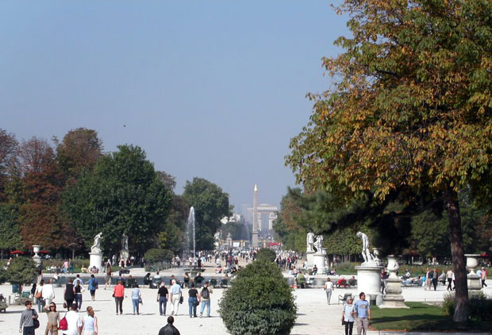

Paris is known for its many elegant parks, but the city boasts a large number of very diverse parks. While some date back to the 17th century, many modern parks have been created in the last couple of decades. Even though Paris has a dense urban structure, the city boasts more than 400 parks.
The Paris squares or places that we want to peak at are those that are more secluded - somewhat like a park in miniature. These will be the locations that can give you respite from a busy day. As you restore your spirit, enjoy the French architecture around the squares, the beautiful plants and the peaceful quiet.

The Tuileries Garden (French: Jardin des Tuileries, IPA: [ʒaʁdɛ̃ de tɥilʁi]) is a public garden located between the Louvre Museum and the Place de la Concorde in the 1st arrondissement of Paris. Created by Catherine de Medicis as the garden of the Tuileries Palace in 1564, it was first opened to the public in 1667, and became a public park after the French Revolution. In the 19th and 20th century, it was the place where Parisians celebrated, met, promenaded, and relaxed.
In July 1559, after the death of her husband, Henry II, Queen Catherine de Medicis decided to move from her residence at the chateau of Tournelles, near the Bastille, to the Louvre Palace, along with her son, the new King, François II. She decided that she would build a new palace there for herself, separate from the Louvre, with a garden modeled after the gardens of her native Florence.
At the time there was an empty area bordered by the Seine on the south, the rue Saint-Honore on the north, the Louvre on the east, and the city walls and deep water-flled moat on the west. Since the 13th century this area was occupied by workshops, called tuileries, making tiles for the roofs of buildings. Some of land had been acquired early in the 16th century by King Francois I. Catherine acquired more land and began to build a new palace and garden on the site.
Catherine commissioned a landscape architect from Florence, Bernard de Carnesse. to build an Italian Renaissance garden, with fountains, a labyrinth, and a grotto, decorated with faience images of plants and animals, made by Bernard Palissy, who Catherine has ordered to discover the secret of Chinese porcelain.
The garden of Catherine de Medicis was an enclosed space five hundred metres long and three hundred metres wide, separated from the new chateau by a lane. It was divided into rectangular compartments by six alleys, and the sections were planted with lawns, flower beds, and small clusters of five trees, called Quinconces; and, more practically, with kitchen gardens and vineyards.
The Tuileries was the largest and most beautiful garden in Paris at the time, Catherine used it for lavish royal festivities honoring ambassadors from Queen Elizabeth I of England and the marriage of her daughter, Marguerite de Valois, to the future Henry IV.